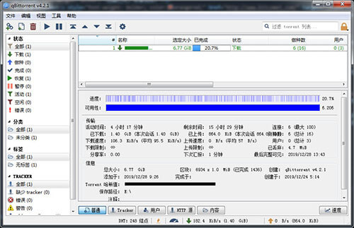

发布日期
12/28
2019
多环境兼容的BT下载工具
迅雷已死，有事烧纸。
【1】BitComet（点此下载）
比特彗星（BitCome）是一款用C++语言为Windows平台编写的BitTorrent客户端软件，也可用于HTTP/FTP下载，并可选装eMule插件（eMule plug-in）通过ed2k网络进行BT/eMule同时下载。自带种子市场功能，有广告。
【2】uTorrent（点此下载）
μTorrent(uTorrent) 是一个小巧强劲、全功能、用C++编写、不开源，支持Windows、Mac OS X和GNU/Linux平台的免费BitTorrent客户端。µTorrent在2006年11月7日被BitTorrent Inc.收购，所以BitTorrent=μTorrent。有广告和额外收费服务。
【3】qBittorrent（点此下载）
qBittorrent是一个新的轻量级BitTorrent客户端，可运行于Linux、windows及其他系统，它开源无广告，简单易用，功能强大。可以被视为一个良好的替代其他BitTorrent软件的客户端。
【4】Transmission（点此下载）
Transmission是一种BitTorrent客户端，特点是一个跨平台的后端和其上的简洁的用户界面。Transmission以MIT许可证和GNU通用公共许可证双许可证授权，因此是一款自由软件。
【5】Tixati（点此下载）
Tixati是一款免费的易于使用的BT下载工具，它支持所有的BT种子，同等的文件传输能力，它还具有强大的带宽图表和节流能力。界面相当简单朴素。
备注：以上部分软件可能包含广告。
选择建议
个人推荐在win平台下使用qBittorrent，开源无广告，界面简洁支持中文。（软件界面预览）
